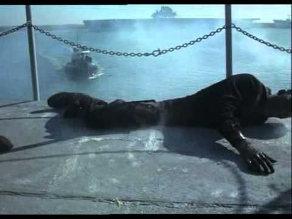

The Philadelphia Experiment
The Philadelphia Experiment is one of the most grotesque military urban legends ever — and it has endured as an infamous World War II conspiracy theory. But is there any truth to it? Let's take a look.
According to legend, on Oct. 28, 1943, the USS Eldridge, a Cannon-class destroyer escort, was conducting top-secret experiments designed to win command of the oceans against the Axis powers. The rumor was that the government was creating technology that would render naval ships invisible to enemy radar, and there in the Philadelphia Naval Shipyard, it was time to test it out.
Witnesses claim an eerie green-blue glow surrounded the hull of the ship as her generators spun up and then, suddenly, the Eldridge disappeared. The ship was then seen in Norfolk Naval Shipyard in Virginia before disappearing again and reappearing back in Philadelphia.
The legend states that classified military documents reported that the Eldridge crew were affected by the events in disturbing ways. Some went insane. Others developed mysterious illness. But others still were said to have been fused together with the ship; still alive, but with limbs sealed to the metal.
Which is actually a convincing reason why the Eldridge's story gained so much momentum. In a 1994 article for the Journal of Scientific Exploration, Jacques F. Vallee theorized that deep-seated imagery is key to planting a hoax into the minds of the masses and of the educated public. But before we break down what really happened that day, let's talk about the man behind the myth: Carl M. Allen, who would go by the pseudonym, Carlos Miguel Allende. In 1956, Allende sent a series of letters to Morris K. Jessup, author of the book, “The Case for the UFO,” in which he argued that unidentified flying objects merit further study. Jessup apparently included text about unified field theory because this is what Allende latched onto for his correspondences. In the 1950s, unified field theory, which has never been proven, attempted to merge Einstein's general theory of relativity with electromagnetism. In fact, Allende claimed to have been taught by Einstein himself and could prove the unified field theory based on events he witnessed on October 28, 1943.
According to Edward Dudgeon, who served in the U.S. Navy aboard the USS Engstrom, which was dry-docked in the Philadelphia Naval Yard while the Eldridge was, both ships did have classified devices on board. They were neither invisibility cloaks nor teleportation drives designed by aliens, but instead, they scrambled the magnetic signatures of ships using the degaussing technique, which provided protection from magnetic torpedoes aboard U-boats. Finally, inland canals connected Norfolk to Philadelphia, allowing a ship to travel between the two in a few hours. The USS Eldridge would be transferred to Greece in 1951 and sold for scrap in the 90s, but Allende's hoax would live on in our effing nightmares forever.
Source: Military.com